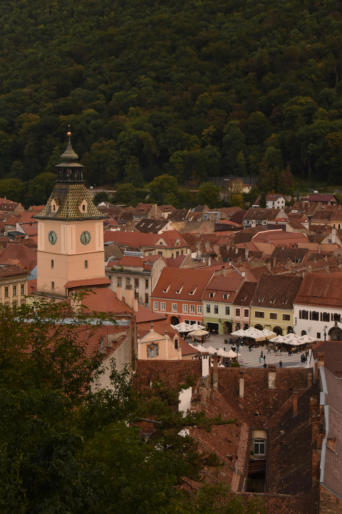
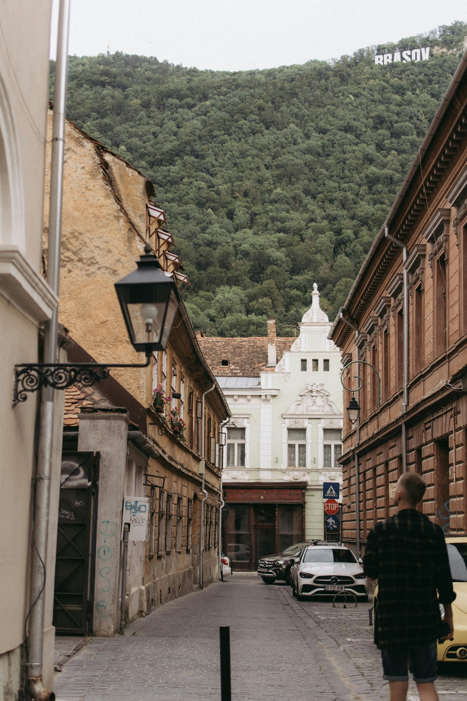
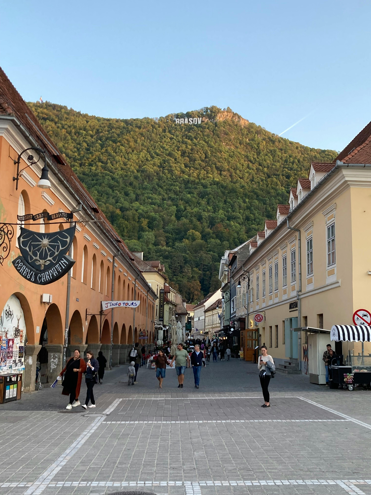
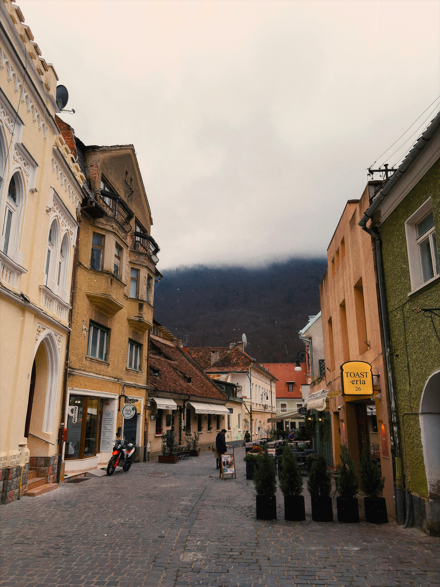

Brașov Uncovered
Explore the heart of Transylvania
Welcome to Brașov
Brașov seems like a place with a lot going on for anyone traveling there. Historic spots and mountain views catch your eye right away. Whatever you might be into, local food, nearby castles,or traditional villages, there is something for every kind of traveller.
Why Visit Brașov?
Whether you are planning a short weekend break or a longer holiday, Brașov offers a mix of relaxation, culture, and exploration. It is the kind of place where discovery happens naturally, and surprizes are around every corner.
Highlights
- Historic old town and medieval streets
- Beautiful mountain scenery and outdoor activities
- Traditional Romanian food and music, as well as local culture
- Easy access to nearby castles and famous landmarks
Gallery
Take a closer look at Brașov through its colourful streets, mountain views, historic corners, and memorable city atmosphere.


